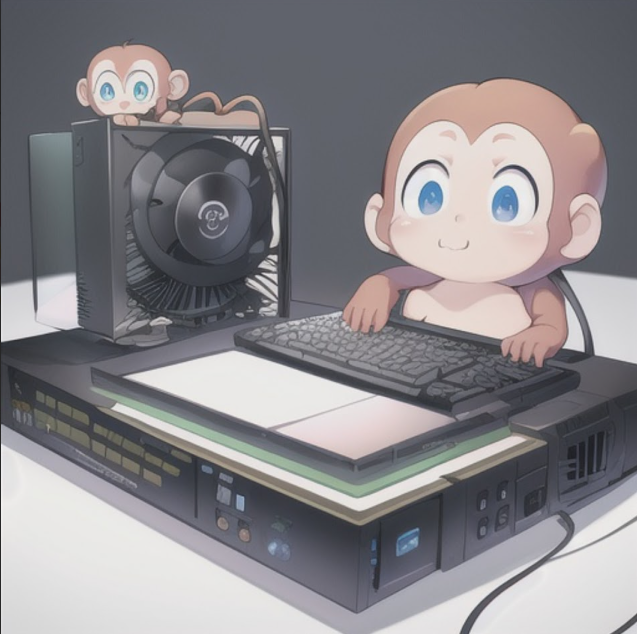

プロフィール
HTML／CSS／JavaScriptを中心に扱う，フロントエンド寄りの学生エンジニアです．使う人にとってわかりやすいUIと，読みやすいコードを大切にしています．
- 名前：土居 巧惺
- 年代：20代前半
- 拠点：愛知県
- メール：koseidoi311@gmail

キャッチコピー・肩書き
「JavaScriptで，アイデアを最速でカタチにするフロントエンドエンジニア」
LP制作／小規模Webアプリ／UI改善を中心に対応します．
できること・スキル
HTML
CSS（Flex／Grid）
JavaScript（ES6+）
React（基礎）
Node.js（基礎）
Git／GitHub
Figma（ワイヤー）
SEO基礎
アクセシビリティ配慮
提供可能なこと
- ランディングページの制作と公開（ドメイン設定／GitHub Pages対応）．
- 小規模なWebアプリの設計と実装（フォーム，バリデーション，簡易API連携など）．
- 既存サイトのUI改良と表示速度改善（画像最適化，CSS整理）．
実績・制作物
自己PR
要件の言語化と，手戻りを減らすラピッドプロトタイピングを重視します．小さな改善を早く回し，必要十分な品質で納品することを大切にしています．
- 課題の分解と優先順位付けが得意．
- 一定のデザイン調整まで自走可能．
- コミュニケーションはテキスト中心でも問題なし．
経歴
-
大学で情報工学を専攻．Webフロントエンドを中心に学習・実装．
-
個人開発と受託の下準備を開始．LP制作や小規模アプリの試作を公開．
資格・活動
- （例）基本情報技術者（取得予定）
- 勉強会参加・LT登壇（予定含む）
連絡先
ご相談は以下フォームまたはSNSへお願いします．